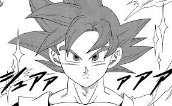
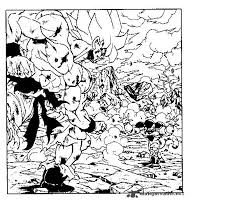

Manga How It Started
Influence of Manga on Modern Anime
Manga art is a huge part of Japan’s creative identity. It’s more than just comic books — it’s a form of visual storytelling that mixes deep emotion, humor, and imagination in every panel. What makes manga stand out is how it captures everyday life and fantasy with the same level of care. The art style can shift from soft and expressive to sharp and action packed, but it always feels personal. Manga has inspired artists, gamers, and dreamers all over the world, proving that a story told through drawings can connect people just as strongly as any movie or game.
Japanese Manga Comics History (Artsper Blog) How Manga Connects Art and Imagination
Manga is one of Japan’s most meaningful art forms because it reflects how storytelling is seen as both visual and emotional. It is not just about the action or characters — it’s about rhythm, pacing, and how every panel guides the reader’s feelings. Many manga artists spend years mastering how to express emotion through simple lines, turning small details like wind, silence, or a single look into powerful moments. What makes manga special is how it bridges generations; older readers find nostalgia in its quiet lessons while younger fans discover new worlds that feel personal. It’s an art form that teaches patience, imagination, and the beauty of storytelling without words.
- Focus on strong emotions and expressive art
- Detailed backgrounds that tell part of the story
- Blend of fantasy and real life themes
- Massive influence on anime, gaming, and pop culture
History of Manga (Wikipedia)